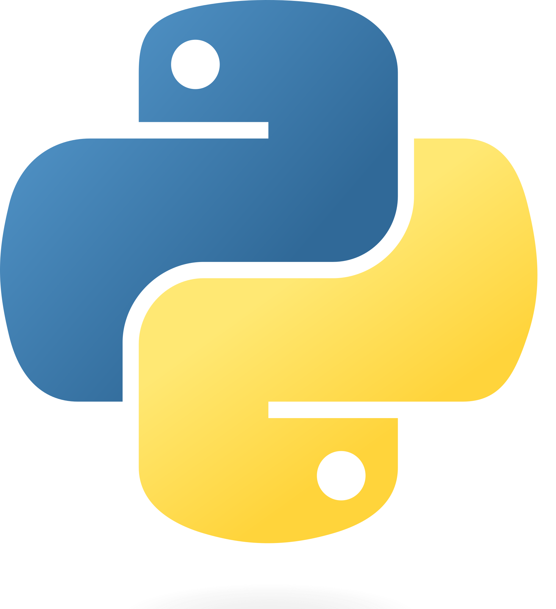
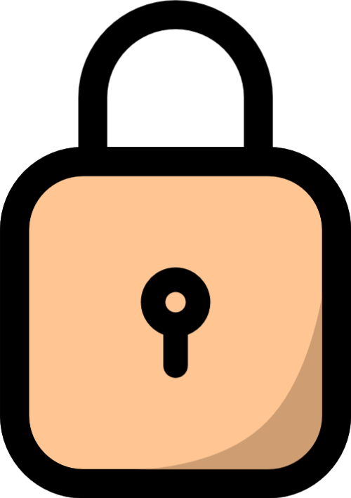

My name is Luke. I am a student and aspiring developer.
I have been involved with computing and technology my entire life,
and have wanted to be a programmer for as long as I can remember.
Growing up with video games and computers, I spent a lot of my time
taking them apart and putting them back together countless times, and doing
so developed a skill and love for messing with technology.
I have a deep passion for anything computing, and simply
wish to spend the rest of my life with a career doing what
I both love and am good at.
In addition to programming, I have a deep-set interest in
Cryptography and Steganography. I regularly compete in CTF's
and online competitions, solving puzzles and breaking
encryptions. I'm also involved with many code golf and
competitive coding and problem solving communities online,
being ranked within the top 600 in the world on CodinGame.com
for Clash of Code!
My Skills
HTML 5
Having developed and been involved with various web development projects
over the past few years, I have become proficient with the use of HTML
to build engaging websites.
CSS 3
Being experienced in web development, I have learned how to aptly use
and apply CSS in order to create visually appealing webpages and user-friendly
interfaces.
C++
Studying C++ in University, I have become somewhat talented in the realm
of software development and can design efficient application with great
focus on scalability and performance.

Python
With Python, I am able to tackle a wide range of diverse challenges,
from web applications to task automation and cyber-security.

Crpytography
Through extensive research, experience, personal projects, competing in CTF's,
penetration testing, and ethical hacking, I have become very familiar
with the world of Cryptography and cyber-security.
Steganography
Whilst proficient with Cryptography, my passion lies with Steganography.
Through exploration and active engagement with various online communities,
websites, and puzzles, I have susbstantial knowledge in regards to digital
forensics and steganography.
Current
Currently, I am in the first year of completing a
Bachelors in Computer Science at the University of
South Wales.
I am also doing freelance web design in my spare time
outside of my assignments. As you can see, this
portfolio is an example of my web design skills.
In addition to this, I also help run the Coding Society
and Code Club in the University.
Hobbies
My hobbies include web design, game development,
competing in CTF's, steganography, making music,
competitive coding, and code golf; at one point
being ranked globally in the top 650 (currently
top 1,000) in Clash of Code on codingame.com.
I also enjoy learning new languages (both programming
and spoken) and graphic design.
Projects
Currently, the only project I can show would be the
website you are currently viewing; my website.
This portfolio showcases my ability to design
and build a functional website frontend.
I have made sure that my experience and skills with
both CSS and HTML have been utilised in some way
throughout the development of this webpage.
Hopefully, you enjoy visitiing it just as much
as I enjoyed creating it.